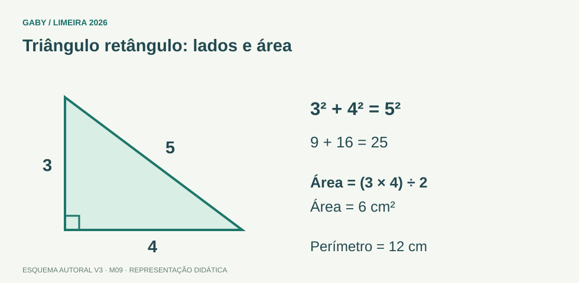

Objetivos do módulo
- Calcular perímetros e áreas de figuras básicas.
- Calcular volumes de prismas retangulares.
- Aplicar o Teorema de Pitágoras.
- Calcular áreas de paralelogramo, trapézio, losango, setor e coroa circular, e de figuras compostas ou com recortes.
- Contar peças de pavimentação e comparar retângulos de mesmo perímetro.
- Usar relações de ângulos: opostos pelo vértice, bissetriz, paralelas cortadas por transversal, triângulos e polígonos.
- Aplicar Pitágoras a diagonais, distâncias no plano cartesiano, geratriz do cone e lados com incógnita.
- Calcular volumes e superfícies de prisma, cubo, cilindro, cone, pirâmide e esfera, e usar a razão de semelhança.
Triângulo retângulo: lados e área

Descrição em texto do esquema
- Catetos: 3 cm e 4 cm
- Hipotenusa: √(3² + 4²) = 5 cm
- Área: (3 × 4) ÷ 2 = 6 cm²
Oficina visual · aplique o esquema
Um retângulo mede 6 cm por 8 cm. Calcule perímetro, área e diagonal.
Atividade autoral complementar da V3. Registre sua resposta; a resolução está no arquivo de gabarito e revisão.
1. Perímetro e área
Perímetro mede contorno; área mede superfície. Retângulo: P=2(b+h), A=b·h. Quadrado: P=4l, A=l². Triângulo: A=b·h/2.
2. Circunferência e círculo
Comprimento da circunferência C=2πr; área do círculo A=πr². Leia se o problema pede contorno ou superfície.
3. Volume
Paralelepípedo retângulo: V=comprimento×largura×altura. A unidade final é cúbica.
4. Ângulos
Reto=90°, raso=180°, volta=360°. Ângulos complementares somam90°; suplementares somam180°.
5. Pitágoras
Em triângulo retângulo, hipotenusa²=cateto1²+cateto2². A hipotenusa é o lado oposto ao ângulo reto e é o maior.
Aprofundamento 1 — Áreas e perímetros das figuras planas
Perímetro é a soma das medidas de todas as bordas da figura. Área é a medida da superfície que a figura ocupa. Antes de calcular, coloque todas as medidas na mesma unidade.
Tabela das figuras planas
| Figura | Perímetro | Área | Cuidado |
|---|---|---|---|
| Quadrado de lado ℓ | 4 × ℓ | ℓ² | Diagonal = ℓ√2 (Aprofundamento 7) |
| Retângulo de base b e altura h | 2 × (b + h) | b × h | Diagonal = √(b² + h²) |
| Paralelogramo de base b, lado inclinado c e altura h | 2 × (b + c) | b × h | A altura é perpendicular à base; o lado inclinado não é altura |
| Triângulo de base b e altura h | soma dos três lados | b × h ÷ 2 | Metade de um paralelogramo de mesma base e altura |
| Trapézio de bases B e b e altura h | soma dos quatro lados | (B + b) × h ÷ 2 | Some as bases antes de multiplicar |
| Losango de diagonais D e d e lado ℓ | 4 × ℓ | D × d ÷ 2 | As diagonais se cortam ao meio e em ângulo reto |
| Círculo de raio r | C = 2πr | πr² | Raio é metade do diâmetro |
Perímetro de peça com furo
Se a peça tem um furo, a borda do furo também é borda da peça. Uma moldura quadrada de lado externo 12 cm, com abertura quadrada de 4 cm de lado, tem bordas 4 × 12 + 4 × 4 = 48 + 16 = 64 cm. Na área acontece o contrário: o furo é descontado, 12² − 4² = 144 − 16 = 128 cm².
Paralelogramo
Corte o triângulo de uma ponta do paralelogramo e encaixe-o na outra ponta: forma-se um retângulo com a mesma base e a mesma altura. Por isso A = b × h. Exemplo: base 9 cm, lado inclinado 5 cm e altura 4 cm. Área = 9 × 4 = 36 cm²; perímetro = 2 × (9 + 5) = 28 cm. Fazer 9 × 5 = 45 está errado, porque 5 cm é o lado inclinado, e não a altura.
Triângulo: a área acompanha a base e a altura
Na fórmula A = b × h ÷ 2, a área é proporcional à base e à altura. Se a base dobra e a altura não muda, a área dobra. Se a base é multiplicada por 4 e a altura é dividida por 4, os fatores se cancelam e a área não muda. Exemplo: base 10 cm e altura 7 cm dão 35 cm²; base 40 cm e altura 1,75 cm também dão 40 × 1,75 ÷ 2 = 35 cm².
Dois triângulos com a mesma base têm áreas na mesma razão das alturas. Com alturas 8 cm e 12 cm, as áreas estão na razão 8 : 12 = 2 : 3. Não se eleva ao quadrado: isso só vale para figuras semelhantes (Aprofundamento 9).
Trapézio
O trapézio tem dois lados paralelos, a base maior B e a base menor b; a altura h é a distância entre elas. Duas cópias do trapézio, uma delas girada, formam um paralelogramo de base B + b; por isso a área é (B + b) × h ÷ 2. Para achar a altura conhecendo a área, isole h: h = 2 × A ÷ (B + b). Exemplo: bases 11 cm e 5 cm, área 72 cm². Então h = 2 × 72 ÷ (11 + 5) = 144 ÷ 16 = 9 cm. Confira: (11 + 5) × 9 ÷ 2 = 72.
Losango
O losango tem os quatro lados iguais. Suas diagonais são perpendiculares e se cortam no ponto médio. Ele ocupa metade do retângulo de lados D e d que o contém, por isso A = D × d ÷ 2. Exemplo: diagonais 16 cm e 12 cm. Área = 16 × 12 ÷ 2 = 96 cm². As metades das diagonais, 8 cm e 6 cm, são catetos de um triângulo retângulo cuja hipotenusa é o lado: √(8² + 6²) = √100 = 10 cm; perímetro = 4 × 10 = 40 cm.
Caminho inverso: área 54 cm² e uma diagonal de 12 cm. A outra diagonal é d = 2 × A ÷ D = 2 × 54 ÷ 12 = 9 cm.
Aprofundamento 2 — Figuras compostas, recortes e pavimentação
Composição e decomposição
Uma figura irregular é resolvida de dois jeitos. Na composição, você divide a figura em partes conhecidas, sem sobreposição, e soma as áreas. No recorte, você parte de uma figura maior e subtrai as áreas retiradas. Os dois caminhos dão o mesmo resultado e servem de conferência.
Exemplo: um terreno em L é um retângulo de 12 m por 9 m do qual falta um canto de 5 m por 4 m.
- Recorte: 12 × 9 − 5 × 4 = 108 − 20 = 88 m².
- Composição: uma faixa de 12 m por 5 m (60 m²) mais um retângulo de 7 m por 4 m (28 m²) dá 88 m².
- Perímetro: 12 + 5 + 5 + 4 + 7 + 9 = 42 m, o mesmo do retângulo inteiro, 2 × (12 + 9) = 42 m. Tirar um canto retangular não muda o perímetro, porque as duas bordas novas substituem os trechos retirados. Já um entalhe no meio de um lado acrescenta bordas e aumenta o perímetro.
Um polígono regular pode ser dividido em triângulos iguais ligando o centro aos vértices. Um octógono regular dividido assim em 8 triângulos de 10 cm² cada tem área 8 × 10 = 80 cm².
Conservação da área
Recortar uma figura e reorganizar as mesmas peças, sem sobrepor nem perder material, muda a forma, mas não muda a área total. É o que se observa nos quebra-cabeças de peças poligonais e na demonstração da área do paralelogramo acima. O perímetro, porém, pode mudar com a nova arrumação.
Pavimentação: quantas peças cobrem um piso
Quando as peças encaixam sem cortes nem sobras, o número de peças é a área do piso dividida pela área de cada peça. O caminho mais seguro é contar fileiras: divida cada lado do piso pelo lado da peça e multiplique.
Exemplo: sala de 4,2 m por 3 m com lajotas quadradas de 30 cm de lado. Em centímetros, 420 ÷ 30 = 14 lajotas em um sentido e 300 ÷ 30 = 10 no outro: 14 × 10 = 140 lajotas. Pela área: 12,6 m² ÷ 0,09 m² = 140. Dividir a área pelo lado (12,6 ÷ 0,3 = 42) é erro: compara área com comprimento.
Se o lado da peça é multiplicado por k, a área da peça é multiplicada por k². Lado 1,5 vez maior dá peça 2,25 vezes maior em área; lado dobrado dá peça 4 vezes maior, e cabem 4 vezes menos peças na mesma região. Se os lados do piso não forem múltiplos do lado da peça, a divisão das áreas dá só um mínimo; na obra há peças cortadas.
Mesmo perímetro, áreas diferentes
Retângulos com o mesmo perímetro podem ter áreas bem diferentes. Com perímetro 24 cm, a base e a altura somam 12 cm:
| Lados (cm) | Área (cm²) |
|---|---|
| 1 × 11 | 11 |
| 2 × 10 | 20 |
| 3 × 9 | 27 |
| 4 × 8 | 32 |
| 5 × 7 | 35 |
| 6 × 6 | 36 |
Quanto mais próximos os lados, maior a área. Entre os retângulos de mesmo perímetro, o quadrado tem a maior área. O inverso também vale: entre retângulos de área 36 cm², o quadrado 6 × 6 tem o menor perímetro (24 cm), enquanto o de 1 × 36 tem 74 cm.
Aprofundamento 3 — Círculo: raio, arco, setor e coroa
Circunferência é a linha da borda; círculo é a região limitada por ela. O raio r vai do centro à borda; o diâmetro atravessa o círculo passando pelo centro e mede 2r. Comprimento da circunferência: C = 2πr (ou π × diâmetro). Área do círculo: A = πr². Use sempre a aproximação de π que o problema pede.
Caminho inverso: achar o raio
- Pela área: r² = A ÷ π. Com área 147 cm² e π = 3, r² = 49 e r = 7 cm; então C = 2 × 3 × 7 = 42 cm.
- Pelo comprimento: r = C ÷ (2π). Com π ≈ 3,14, uma borda circular de 15,7 m corresponde a r = 15,7 ÷ 6,28 = 2,5 m (confira: 2 × 3,14 × 2,5 = 15,7).
Arco e setor circular
Um arco é um pedaço da circunferência; um setor é a fatia do círculo entre dois raios, como uma fatia de pizza. Os dois são a fração ângulo ÷ 360° do todo:
- comprimento do arco = (ângulo ÷ 360°) × 2πr;
- área do setor = (ângulo ÷ 360°) × πr².
| Ângulo central | Fração do círculo |
|---|---|
| 180° | 1/2 |
| 120° | 1/3 |
| 90° | 1/4 |
| 60° | 1/6 |
| 45° | 1/8 |
| 30° | 1/12 |
Exemplo: raio 6 cm, ângulo central 120°, π = 3. A circunferência mede 2 × 3 × 6 = 36 cm e o arco, um terço disso, 12 cm. O círculo tem 3 × 6² = 108 cm² e o setor, um terço, 36 cm².
Coroa circular (anel)
A coroa é a região entre duas circunferências de mesmo centro, com raio externo R e raio interno r. Sua área é a do círculo maior menos a do menor: π × (R² − r²). Exemplo com R = 7 m, r = 4 m e π = 3: 3 × (49 − 16) = 99 m². Subtrair os raios antes de elevar ao quadrado, 3 × (7 − 4)² = 27, está errado.
Círculo inscrito no quadrado
O círculo inscrito toca os quatro lados do quadrado; seu diâmetro é igual ao lado, e o raio é metade do lado. A área do quadrado fora do círculo é ℓ² − πr². Exemplo: lado 10 cm, raio 5 cm, π ≈ 3,14: 100 − 3,14 × 25 = 100 − 78,5 = 21,5 cm².
Aprofundamento 4 — Ângulos, bissetriz e retas paralelas
Nomes e pares de ângulos
- Agudo: menor que 90°. Reto: 90°. Obtuso: entre 90° e 180°. Raso: 180°.
- Complementares somam 90°: o complemento de x é 90° − x. Suplementares somam 180°: o suplemento de x é 180° − x. Para 28°, o complemento é 62° e o suplemento é 152°.
- Opostos pelo vértice: duas retas que se cruzam formam quatro ângulos; os opostos são iguais e os vizinhos são suplementares. Se um mede 40°, os outros medem 140°, 40° e 140°.
Bissetriz
Bissetriz é a semirreta que sai do vértice e divide o ângulo em duas partes iguais: cada parte mede metade do ângulo. A bissetriz de um ângulo de 86° forma dois ângulos de 43°. As bissetrizes de dois ângulos vizinhos suplementares formam entre si 90°, porque metade de 180° é 90°.
Duas paralelas cortadas por uma transversal
Uma reta transversal que corta duas retas paralelas forma oito ângulos, quatro em cada cruzamento. Só aparecem duas medidas: x e 180° − x.
| Par | Posição | Relação |
|---|---|---|
| Correspondentes | mesma posição em cada cruzamento | iguais |
| Alternos internos | entre as paralelas, em lados opostos da transversal | iguais |
| Alternos externos | fora das paralelas, em lados opostos da transversal | iguais |
| Colaterais internos | entre as paralelas, do mesmo lado da transversal | suplementares (somam 180°) |
| Colaterais externos | fora das paralelas, do mesmo lado da transversal | suplementares (somam 180°) |
Exemplo: um ângulo interno mede 72°. O alterno interno a ele também mede 72°; o colateral interno mede 180° − 72° = 108°.
Aprofundamento 5 — Triângulos: existência, classificação, ângulos e medianas
Condição de existência: desigualdade triangular
Três medidas formam um triângulo somente se cada lado for menor que a soma dos outros dois. Na prática, basta testar o maior lado: ele precisa ser menor que a soma dos outros dois.
- 5, 8 e 12: 5 + 8 = 13, maior que 12. Existe.
- 3, 6 e 10: 3 + 6 = 9, menor que 10. Não existe: os lados curtos não se encontram.
- 4, 6 e 10: 4 + 6 = 10, igual ao maior. Não forma triângulo: os pontos ficam alinhados.
Com dois lados conhecidos, o terceiro fica entre a diferença e a soma deles. Lados 7 e 3: 4 < x < 10. Perímetro positivo ou lados positivos não bastam para garantir a existência.
Classificação
| Critério | Tipos |
|---|---|
| Pelos lados | equilátero (três lados iguais), isósceles (pelo menos dois iguais), escaleno (três diferentes) |
| Pelos ângulos | acutângulo (três agudos), retângulo (um reto), obtusângulo (um obtuso) |
Soma dos ângulos internos e triângulo isósceles
Em todo triângulo, os três ângulos internos somam 180°. No triângulo isósceles, os dois ângulos da base (opostos aos lados iguais) são iguais; o terceiro é o ângulo do vértice.
- Ângulo do vértice 50°: cada ângulo da base mede (180° − 50°) ÷ 2 = 65°.
- Ângulo da base 35°: o do vértice mede 180° − 2 × 35° = 110°.
- Equilátero: três ângulos de 60°.
Ângulo externo
O ângulo externo é formado por um lado e pelo prolongamento do lado vizinho. Ele soma 180° com o interno do mesmo vértice e é igual à soma dos dois ângulos internos não adjacentes a ele. Exemplo: se os internos não adjacentes medem 45° e 60°, o externo mede 105° e o interno adjacente mede 180° − 105° = 75° (confira: 45° + 60° + 75° = 180°). Tomando um externo em cada vértice, os três somam 360°.
Mediana e mediana relativa à hipotenusa
Mediana é o segmento que liga um vértice ao ponto médio do lado oposto. Todo triângulo tem três medianas.
No triângulo retângulo, a mediana relativa à hipotenusa mede metade da hipotenusa. Motivo: junte ao triângulo uma cópia girada e forme um retângulo; a hipotenusa vira uma diagonal. As diagonais de um retângulo são iguais e se cortam ao meio, então o ponto médio da hipotenusa fica à mesma distância dos três vértices.
Exemplo: catetos 9 cm e 12 cm. Hipotenusa = √(81 + 144) = 15 cm; mediana relativa a ela = 15 ÷ 2 = 7,5 cm. Não confunda com a altura relativa à hipotenusa, que é outro segmento: 9 × 12 ÷ 15 = 7,2 cm.
Aprofundamento 6 — Polígonos: soma dos ângulos, polígonos regulares e diagonais
Soma dos ângulos internos
Para um polígono convexo de n lados, a soma dos ângulos internos é S = (n − 2) × 180°. Motivo: as diagonais que saem de um vértice dividem o polígono em n − 2 triângulos, e cada um contribui com 180°.
| Polígono | n | Soma dos ângulos internos |
|---|---|---|
| Triângulo | 3 | 180° |
| Quadrilátero | 4 | 360° |
| Pentágono | 5 | 540° |
| Hexágono | 6 | 720° |
| Octógono | 8 | 1.080° |
| Decágono | 10 | 1.440° |
- Quadrilátero com três ângulos de 85°, 120° e 90°: o quarto mede 360° − 295° = 65°.
- Achar n pela soma: n = S ÷ 180° + 2. Com soma 1.440°, n = 8 + 2 = 10 lados.
Polígono regular: ângulos internos e externos
Polígono regular tem todos os lados e todos os ângulos iguais. Cada ângulo interno vale S ÷ n. O ângulo externo de cada vértice é 180° menos o interno. Percorrendo o contorno, os ângulos externos completam uma volta: somam 360° em qualquer polígono convexo. Por isso, no regular:
- ângulo externo = 360° ÷ n e n = 360° ÷ ângulo externo;
- externo de 36°: n = 360 ÷ 36 = 10 lados; cada interno mede 180° − 36° = 144° (confira: 1.440° ÷ 10 = 144°);
- interno de 140°: externo 40°, então n = 360 ÷ 40 = 9 lados.
Número de diagonais
De cada vértice saem n − 3 diagonais: não se liga o vértice a ele mesmo nem aos dois vizinhos, que formam lados. Multiplicando por n vértices, cada diagonal é contada duas vezes (uma em cada ponta). Logo, d = n × (n − 3) ÷ 2.
- Pentágono: 5 × 2 ÷ 2 = 5 diagonais.
- Hexágono: 6 × 3 ÷ 2 = 9 diagonais.
- Decágono: 10 × 7 ÷ 2 = 35 diagonais.
Aprofundamento 7 — Pitágoras em ação: catetos, diagonais, coordenadas e equação do 2º grau
Achar a hipotenusa ou um cateto
Com hipotenusa a e catetos b e c: a² = b² + c². Para a hipotenusa, some os quadrados; para um cateto, subtraia: b² = a² − c². Exemplo: um cabo de 17 m vai do topo de um poste a um ponto do chão a 8 m da base. O cabo é a hipotenusa: altura² = 17² − 8² = 289 − 64 = 225, altura = 15 m.
Ternos que aparecem muito: 3, 4, 5; 5, 12, 13; 8, 15, 17; 7, 24, 25 e seus múltiplos, como 6, 8, 10 e 9, 12, 15.
Diagonal do retângulo e do quadrado
- Retângulo de lados b e h: d = √(b² + h²). Lados 8 cm e 15 cm: d = √(64 + 225) = √289 = 17 cm.
- Quadrado de lado ℓ: d² = ℓ² + ℓ² = 2ℓ², então d = ℓ√2. Lado 7 cm: d = 7√2 ≈ 7 × 1,41 ≈ 9,9 cm. Caminho inverso: diagonal 10√2 cm significa lado 10 cm.
- Para saber se um objeto retangular cabe em um espaço retangular, compare largura com largura e altura com altura. A diagonal menor não basta: uma peça de 50 cm por 10 cm (diagonal ≈ 51 cm) não cabe num vão de 40 cm por 40 cm (diagonal ≈ 56,6 cm), porque 50 cm é mais que 40 cm.
Diagonal do cubo e do bloco retangular
No cubo de aresta ℓ, a diagonal de uma face mede ℓ√2. A diagonal espacial liga dois vértices opostos atravessando o sólido; ela é hipotenusa de um triângulo com catetos ℓ√2 e ℓ: D² = 2ℓ² + ℓ² = 3ℓ², logo D = ℓ√3. Aresta 4 cm: diagonal da face 4√2 cm e diagonal do cubo 4√3 ≈ 6,93 cm. No bloco retangular de lados a, b e c, D = √(a² + b² + c²); com 2, 3 e 6 cm, D = √49 = 7 cm.
Plano cartesiano: comprimento e distância
No plano cartesiano, cada ponto tem coordenadas (x, y). Um segmento horizontal mede a diferença dos x; um vertical, a diferença dos y. O retângulo de vértices (−2, 1), (4, 1), (4, 5) e (−2, 5) tem base 4 − (−2) = 6 e altura 5 − 1 = 4, portanto área 24. A coordenada não é o comprimento: a base não mede 4 (a coordenada x de um vértice), e sim 6.
Para dois pontos quaisquer, as diferenças de coordenadas são os catetos e a distância é a hipotenusa: d = √((x2 − x1)² + (y2 − y1)²). Exemplo: P = (2, −1) e Q = (14, 4). Diferenças 12 e 5; d = √(144 + 25) = √169 = 13. Somar 12 + 5 = 17 mediria um caminho pelos eixos, não a distância em linha reta.
Lados com incógnita: equação do 2º grau
Quando os lados vêm em função de x, identifique a hipotenusa (a maior expressão, oposta ao ângulo reto), monte Pitágoras, resolva a equação do 2º grau e descarte a raiz que torna algum lado negativo ou nulo.
Exemplo: catetos x e x + 7, hipotenusa x + 8.
- x² + (x + 7)² = (x + 8)².
- x² + x² + 14x + 49 = x² + 16x + 64.
- x² − 2x − 15 = 0, que fatora em (x − 5) × (x + 3) = 0. Por Bhaskara: Δ = 4 + 60 = 64 e x = (2 ± 8) ÷ 2.
- x = 5 ou x = −3. Com x = −3 o primeiro cateto seria negativo: descarte.
- Lados 5, 12 e 13 (confira: 25 + 144 = 169); perímetro 30.
Geratriz do cone
No cone circular reto, a geratriz g liga o vértice à borda da base. Ela é hipotenusa de um triângulo retângulo cujos catetos são a altura h e o raio r: g² = r² + h². Com r = 6 cm e h = 8 cm, g = √100 = 10 cm. Caminho inverso: g = 25 cm e r = 7 cm dão h = √(625 − 49) = √576 = 24 cm.
Aprofundamento 8 — Sólidos: prisma, cubo, cilindro, cone, pirâmide e esfera
| Sólido | Volume | Superfície |
|---|---|---|
| Prisma (base qualquer) | área da base × altura | soma das faces |
| Cubo de aresta a | a³ | área total 6a² (seis faces quadradas) |
| Cilindro de raio r e altura h | πr² × h | lateral 2πr × h; total 2πrh + 2πr² |
| Pirâmide e cone | (1/3) × área da base × altura | — |
| Esfera de raio r | (4/3) × π × r³ | — |
Prisma e cilindro: área da base × altura
Prisma e cilindro têm duas bases iguais e paralelas; o volume é a área da base vezes a altura (distância entre as bases). Prisma com base triangular de base 5 cm e altura 8 cm (área 5 × 8 ÷ 2 = 20 cm²) e altura do prisma 12 cm: V = 20 × 12 = 240 cm³.
No cilindro, a base é um círculo: V = πr² × h. Com r = 4 cm, h = 10 cm e π = 3: V = 3 × 16 × 10 = 480 cm³ = 480 mL. As unidades devem ser as mesmas antes da conta: um tubo de diâmetro 6 mm e comprimento 5 cm tem r = 3 mm e h = 50 mm; com π ≈ 3,14, V = 3,14 × 9 × 50 = 1.413 mm³.
Área lateral do cilindro
Desenrolada, a superfície lateral do cilindro é um retângulo: a largura é o comprimento da circunferência da base, 2πr, e a altura é h. Área lateral = 2πr × h. No cilindro acima: 2 × 3 × 4 × 10 = 240 cm². A área total soma as duas bases: 240 + 2 × 48 = 336 cm². Se só a lateral for revestida, as bases não entram.
Mudar o raio do cilindro
Como o raio aparece ao quadrado, multiplicar o raio por k multiplica a área da base e o volume por k². Para manter o volume, a altura deve ser dividida por k². Raio triplicado: base 9 vezes maior; para o mesmo volume, a altura é dividida por 9.
Cone e pirâmide: um terço
Pirâmide e cone com a mesma base e a mesma altura de um prisma ou cilindro têm um terço do volume deles: V = (1/3) × área da base × altura. Pirâmide de base quadrada de lado 6 cm e altura 10 cm: V = 36 × 10 ÷ 3 = 120 cm³. Um cilindro de 150 cm³ corresponde a um cone de 50 cm³ com mesma base e altura. Para achar a altura, isole: h = 3 × V ÷ área da base. Cone de base 27 cm² e volume 81 cm³: h = 3 × 81 ÷ 27 = 9 cm.
Cubo: volume, área total e recortes
Do volume se obtém a aresta pela raiz cúbica. Cubo de 64 cm³: aresta 4 cm (4 × 4 × 4 = 64); área total = 6 × 4² = 96 cm².
Retirar um cubinho de um sólido muda a superfície conforme o lugar do recorte. Exemplo com cubo de aresta 5 cm (área 150 cm²) e cubinho de 1 cm:
- no canto: somem três quadradinhos externos e aparecem três novos; a área continua 150 cm², e o volume cai de 125 para 124 cm³;
- no meio de uma aresta: somem dois e aparecem quatro; a área sobe para 152 cm²;
- no centro de uma face: some um e aparecem cinco; a área sobe para 154 cm².
Cubo pintado e dividido em cubinhos
Um cubo de aresta n é pintado por fora e cortado em n³ cubinhos de aresta 1. Conte pela posição:
| Posição | Faces pintadas | Quantidade | Cubo de aresta 4 |
|---|---|---|---|
| Vértices | 3 | 8 | 8 |
| Arestas, sem os cantos | 2 | 12 × (n − 2) | 24 |
| Faces, sem a borda | 1 | 6 × (n − 2)² | 24 |
| Interior | 0 | (n − 2)³ | 8 |
Confira sempre: 8 + 24 + 24 + 8 = 64 = 4³.
Esfera
V = (4/3) × π × r³. Raio 3 cm e π ≈ 3,14: V = (4/3) × 3,14 × 27 = 113,04 cm³. O volume acompanha o cubo do raio: raio dobrado, volume 2³ = 8 vezes maior; raios na razão 2 : 5, volumes na razão 8 : 125. O fator (4/3)π se cancela ao comparar duas esferas.
Aprofundamento 9 — Semelhança: razão de lados, áreas e volumes
Figuras semelhantes têm a mesma forma: ângulos iguais e medidas correspondentes proporcionais. A razão entre medidas correspondentes é a razão de semelhança k.
- Comprimentos e perímetros: razão k.
- Áreas: o quadrado da razão, k², porque área multiplica duas medidas.
- Volumes: o cubo da razão, k³, porque volume multiplica três medidas.
Exemplo: dois triângulos semelhantes com lados na razão 3 : 4; o menor tem 18 cm². A razão das áreas é 9 : 16, então o maior tem 18 × 16 ÷ 9 = 32 cm².
Maquete na escala 1 : 50: cada medida real é 50 vezes a da maquete; áreas reais são 50² = 2.500 vezes maiores e volumes, 50³ = 125.000 vezes. Um piso de 20 cm² na maquete tem 20 × 2.500 = 50.000 cm² = 5 m²; uma caixa d'água de 8 cm³ na maquete tem 1.000.000 cm³ = 1 m³.
Caminho inverso: áreas na razão 4 : 9 indicam lados na razão 2 : 3 (raiz quadrada); volumes na razão 8 : 27 também indicam lados 2 : 3 (raiz cúbica). Sem semelhança, não se eleva nada ao quadrado: triângulos de mesma base têm áreas na razão das alturas.
Aprofundamento 10 — Mais exemplos resolvidos
Piso com recorte
Situação: uma sala de 6 m por 5 m tem, em um canto, um armário embutido de 2 m por 1 m que não recebe piso. Quantas placas quadradas de 50 cm de lado cobrem o resto, sem cortes?
Caminho em volta de um canteiro
Situação: um canteiro circular de raio 3 m é cercado por um caminho de 1 m de largura. Com π = 3, qual é a área do caminho?
Polígono regular pelo ângulo interno
Situação: cada ângulo interno de um polígono regular mede 144°. Quantos lados e quantas diagonais ele tem, e quanto somam seus ângulos internos?
Caixa-d'água cilíndrica em litros
Situação: uma caixa-d'água cilíndrica tem diâmetro 1,2 m e altura 1,5 m. Com π ≈ 3,14, quantos litros ela comporta?
Aprofundamento 11 — Resumo do aprofundamento
- Paralelogramo b × h; trapézio (B + b) × h ÷ 2; losango D × d ÷ 2.
- Perímetro soma todas as bordas, inclusive a do furo; na área, o furo é subtraído.
- Figura composta: some as partes ou subtraia os recortes. Reorganizar peças conserva a área.
- Pavimentação: peças = área da região ÷ área de cada peça; confira por fileiras.
- Mesmo perímetro: o quadrado tem a maior área.
- Raio pela área: r² = A ÷ π. Arco e setor: fração ângulo ÷ 360°. Coroa: π × (R² − r²).
- Opostos pelo vértice são iguais; bissetriz divide ao meio; entre paralelas, alternos iguais e colaterais suplementares.
- Triângulo existe se o maior lado for menor que a soma dos outros dois; ângulos somam 180°; externo = soma dos internos não adjacentes.
- Mediana relativa à hipotenusa = metade da hipotenusa.
- Polígonos: soma interna (n − 2) × 180°; externos somam 360°; diagonais n × (n − 3) ÷ 2.
- Diagonais: quadrado ℓ√2, cubo ℓ√3; distância entre pontos por Pitágoras com as diferenças de coordenadas.
- Lados com x: resolva a equação do 2º grau e descarte a raiz que gera lado negativo.
- Prisma e cilindro: área da base × altura; cone e pirâmide: um terço disso; esfera (4/3)πr³; cubo a³ e 6a²; cilindro lateral 2πr × h.
- Semelhança de razão k: áreas k², volumes k³.
Exemplos resolvidos passo a passo
Exemplo 1
Situação: Retângulo 8m×5m.
Exemplo 2
Situação: Catetos 6 e8. Hipotenusa?
Exemplo 3
Situação: Caixa 2m×3m×4m.
Pegadinhas e erros frequentes
- Confundir área e perímetro.
- Usar diâmetro como raio.
- Aplicar Pitágoras em triângulo não retângulo.
- Esquecer unidade quadrada/cúbica.
- Usar o lado inclinado do paralelogramo como se fosse a altura.
- No trapézio, esquecer de somar as duas bases ou de dividir por 2.
- Na peça com furo, não somar a borda do furo ao perímetro.
- Dividir a área do piso pelo lado da peça, e não pela área de cada peça.
- Na coroa circular, subtrair os raios antes de elevar ao quadrado.
- Achar que três medidas positivas sempre formam triângulo: teste a desigualdade triangular.
- Confundir colaterais internos (suplementares) com alternos internos (iguais).
- Usar n em vez de n − 2 na soma dos ângulos internos.
- Somar os quadrados para achar um cateto: para cateto, subtraia.
- Manter a raiz negativa da equação do 2º grau como medida de lado.
- Esquecer o fator 1/3 no cone e na pirâmide, ou usá-lo no prisma e no cilindro.
- Usar a razão de lados para áreas e volumes de figuras semelhantes, em vez de k² e k³.
Resumo de prova
- Retângulo A=bh, P=2(b+h).
- Triângulo A=bh/2.
- Círculo A=πr².
- Volume=produto das três dimensões.
- Pitágoras: h²=a²+b².
Exercícios do módulo
Resolva sem consultar o arquivo de gabarito. As questões são autorais e construídas para treinar os conceitos do edital.
- 22
- 11
- 14
- 28
- 11
- 14
- 22
- 28
- 125
- 25
- 20
- 10
- 30
- 60
- 16
- 36
- 180°
- 45°
- 360°
- 90°
- 360°
- 45°
- 90°
- 180°
- √7
- 5
- 7
- 12
- 9π
- 6π
- 3π
- 18π
- 9π
- 3π
- 18π
- 6π
- 15
- 60
- 30
- 10
Quando terminar, abra Matemática 09 - Geometria- Perímetro, Área, Volume, Ângulos e Pitágoras - Gabarito e Revisão.
Checklist de domínio
- ☐ Calcular perímetros e áreas de figuras básicas.
- ☐ Calcular volumes de prismas retangulares.
- ☐ Aplicar o Teorema de Pitágoras.
- ☐ Calcular áreas de paralelogramo, trapézio (inclusive achando a altura) e losango.
- ☐ Resolver figuras compostas, com furo e pavimentação.
- ☐ Achar o raio pela área; calcular arco, setor e coroa circular.
- ☐ Usar opostos pelo vértice, bissetriz e ângulos entre paralelas.
- ☐ Testar a existência de um triângulo e usar ângulos internos, externos e a mediana relativa à hipotenusa.
- ☐ Calcular soma dos ângulos internos, ângulo externo de polígono regular e número de diagonais.
- ☐ Aplicar Pitágoras a diagonais, distâncias, geratriz e lados com incógnita.
- ☐ Calcular volumes e áreas de prisma, cubo, cilindro, cone, pirâmide e esfera.
- ☐ Usar k² para áreas e k³ para volumes de figuras semelhantes.
Meta do módulo: 80% ou mais nas questões, sem depender de consulta.
Referências e conteúdos auxiliares
- IMPA/OBMEP — Portal da Matemática, módulosVideoaulas, exercícios e materiais por tema. Localize o assunto indicado no roteiro complementar do módulo.
- IMPA/OBMEP — Elementos básicos de geometria plana, parte 1Ângulos suplementares, opostos pelo vértice, bissetriz, retas paralelas cortadas por transversal, soma dos ângulos do triângulo, classificação de triângulos, ângulo externo e número de diagonais de polígono. Conferido em 18/11/2026.
- IMPA/OBMEP — Elementos básicos de geometria plana, parte 2Desigualdade triangular (condição de existência) e teorema do ângulo externo. Conferido em 18/11/2026.
- IMPA/OBMEP — Elementos básicos de geometria plana, parte 3Paralelogramos, retângulo, losango e trapézios; medianas do triângulo; comprimento da circunferência e de arcos. Conferido em 18/11/2026.
- IMPA/OBMEP — Áreas de figuras planasÁreas de retângulo, paralelogramo, triângulo, losango, trapézio, polígonos regulares, círculo e setor circular; razão entre áreas de triângulos. Conferido em 18/11/2026.
- IMPA/OBMEP — Problemas envolvendo áreasProblemas de áreas de regiões compostas, triângulos, trapézios e círculo. Conferido em 18/11/2026.
- IMPA/OBMEP — Teorema de Pitágoras e aplicaçõesEnunciado, demonstrações e aplicações do teorema de Pitágoras. Conferido em 18/11/2026.
- IMPA/OBMEP — Geometria analítica 1Coordenadas no plano cartesiano e distância entre dois pontos. Conferido em 18/11/2026.
- IMPA/OBMEP — Semelhança de triângulos e teorema de TalesSemelhança entre figuras e polígonos e razão de semelhança. Conferido em 18/11/2026.
- IMPA/OBMEP — Geometria espacial 1: fundamentosPrismas, poliedros e problemas no cubo. Conferido em 18/11/2026.
- IMPA/OBMEP — Geometria espacial 2: prismas e pirâmidesVolume de prismas e pirâmides (um terço de área da base × altura) e volumes de sólidos semelhantes. Conferido em 18/11/2026.
- IMPA/OBMEP — Geometria espacial 3: cilindros, cones e esferasÁrea da superfície e volume do cilindro, geratriz e volume do cone, volume da esfera. Conferido em 18/11/2026.
Referências externas de apoio consultadas para a V3 em 27/09/2026. A origem das questões é o material autoral do projeto; estes links não indicam que uma instituição publicou ou validou os exercícios. As páginas externas precisam de internet. Em informática, confira a versão do programa; em legislação, observe o recorte e as regras de atualização do edital.